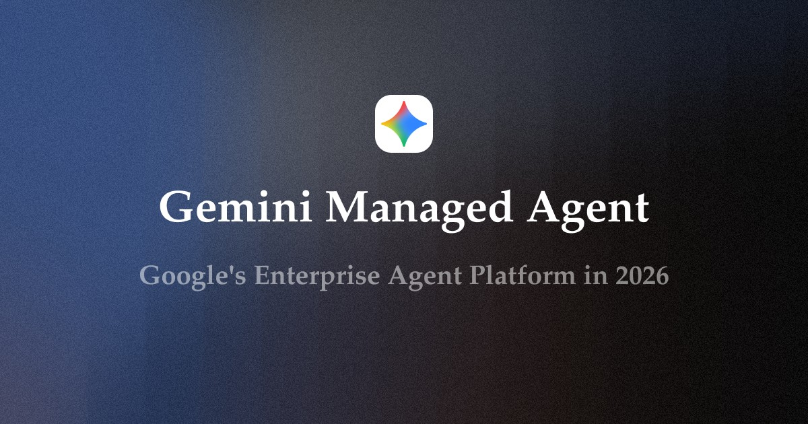

Eigent｜Gemini Managed Agents：Google 企業級受管理代理平台與官方 Managed Agents API 查核
來源是 Eigent AI 由 Douglas Lai 撰寫的文章〈Gemini Managed Agents Explained: Google's Enterprise Agent Platform in 2026〉。文章把 Google 的 Managed Agents API 解讀為 Gemini Enterprise Agent Platform 的企業級代理基礎設施層：由 Google 代管 sandbox runtime、集中治理、Workspace / enterprise data 整合與安全控管，讓開發者不必自行維運 VM、container 或 agent sandbox。
欒帥後續補充的 Google Cloud 官方文件 `Agent Platform 的受管理代理 API 總覽` 是這篇歸檔的核心查核來源；官方文件確認 Managed Agents API 仍屬正式發布前產品，且只能用於有限測試與評估，不應處理專有、私密或機密資料。

來源文章重點
Eigent 將 Gemini Managed Agents 描述為 Google 在企業 agentic AI 競賽中的「managed runtime」答案。核心觀點包括：
- Managed Agents API 分成 control plane 與 data plane：Agents API 負責建立、設定、更新與治理代理；Interactions API 負責在 runtime 與已部署代理互動。
- 每個 managed agent 在 Google-hosted、sandboxed Linux environment 中執行；可以規劃、呼叫工具、執行程式碼、讀寫檔案、存取掛載資料，並受網路 allowlist 與安全政策限制。
- Gemini Enterprise Agent Platform 構成一個 no-code 到 pro-code 的堆疊：Agent Studio / Workspace Studio 類介面面向業務與低程式碼使用者；ADK / Agent Runtime 面向開發者；Managed Agents API 面向需要 sandboxed、governed、config-driven agents 的團隊。
- Google 的差異化在 Workspace / Google Cloud 整合、集中治理、Agent Registry / Marketplace 與 Agent Gateway；代價是 Google Cloud 綁定、Gemini 模型路線與資料駐留限制。
- 對 Eigent 而言，Google 的架構驗證了 isolated agent workspace、governed tool access、agent-to-agent coordination 的方向，但 Eigent 強調自己會往 model-agnostic、open foundation 走。
圖片 / 封面描述
主圖是深藍黑到灰色的顆粒漸層背景，上方中央有 Gemini 彩色星形圖示；中間大字寫著「Gemini Managed Agent」，下方灰字寫著「Google's Enterprise Agent Platform in 2026」。畫面沒有流程圖或產品 UI，屬於概念封面，適合作為「Google 企業級受管理代理平台」主題入口。
Google 官方來源與查核
Google Cloud 官方 `Agent Platform 的受管理代理 API 總覽` 確認：Managed Agents API 可透過單一 API 呼叫建構自主管理代理；每個代理由 Antigravity harness 支援，並在 sandbox environment 中進行推論、規劃、使用代理技能、執行程式碼、搜尋網路、讀寫檔案。
官方文件也確認架構分成兩個主要介面：
- `Agents API`：控制層，用於根據設定建立代理、設定執行環境、掛接外部資料來源、定義 network allowlist；設定會套用到代理的 sandbox execution environment。
- `Interactions API`：資料平面，作為 runtime 與已部署代理通訊與互動的主要介面。
Google 文件對安全邊界講得比 Eigent 文章更保守：Managed Agents API 仍為預覽 / 正式發布前產品；預設每個代理只在 sandbox 內動作，無法存取外部系統、網路或憑證。若要外連 API、clone public repositories 或下載套件，開發者必須明確啟用 network access，並且只開最小必要範圍。
認證與工具連結方面，官方要求開發者自行佈建與設定憑證 scope，使用最低權限、短存活權杖、不要傳入不希望代理使用的 credentials、定期輪替憑證。連結 MCP server 或外部 API 時，也要只接信任工具、設定最小權限、先用 sample / synthetic data 測試。
Brave 搜尋到的 Google Cloud 官方文件也補強了周邊堆疊：
- `Agent Studio` 是 Google Cloud console 內的 low-code visual designer / collaborative workspace，用於設計與管理 agent workflows。
- `ADK` 是 open-source、code-first agent development framework，可用於 build、debug、deploy enterprise-scale agents；Agent Runtime 可部署 ADK agents，也支援 Agent2Agent / LangChain / LangGraph / LlamaIndex 等路徑。
- `Agent Gateway` 是集中政策執行點，用於治理 agent-to-agent 與 agent-to-tool 互動，支援 access policies、mTLS 與 MCP security。
- `Agent Registry` 是 Gemini Enterprise Agent Platform 中管理 agents、tools、MCP servers 的集中 catalog / inventory / governance hub。
- `Managed Agents API sandbox environment` 官方說明標示其為 isolated Linux sandbox，可執行 bash commands、read/write files 與多步驟工作。
實務判讀
這篇文章值得歸檔，因為它把 Google agent 平台的定位講清楚：Managed Agents API 不是單純「Gemini API 多呼叫幾次」，而是 Google Cloud 把 agent runtime、sandbox、network control、credential scope、audit / governance 與 enterprise data access 變成平台化基礎設施。
對企業採用者來說，真正要評估的不是「能不能讓 agent 自動做事」，而是：
- sandbox 預設隔離是否足以承載內部測試；
- network allowlist 與 credential scope 是否能對應內部資安規範；
- 是否能把 agent 設定納入 IaC / CI/CD / review 流程；
- Agent Gateway / Registry 是否能變成統一治理層，而不是另一個孤島；
- Google Cloud / Gemini model lock-in 是否可接受；
- 預覽產品限制是否符合企業資料合規要求。
補充邊界
- Google 官方文件明確標示 Managed Agents API 是正式發布前產品，且目前僅供有限測試與評估；不得用於商業或 production 用途，也不應處理專有、私密或機密資料。
- Eigent 文章提到的部分品牌化說法或版本名（例如特定 Gemini model 版本、built-in agents 名稱、Marketplace 細節、消費者端 Gemini Agent 等）需逐項以 Google 最新官方文件確認；本歸檔只把已由 Google Cloud 文件或 Brave 搜尋官方結果支持的部分列為查核成立。
- 官方 Managed Agents 文件強調「預設無外部系統 / 網路 / 憑證存取」；任何外連、MCP、API 或資料庫接入都需要開發者明確設定並承擔憑證與權限管理責任。
- 對台灣企業而言，後續若要導入，需另查資料駐留區域、個資法 / 金融或醫療等行業限制、Google Cloud 合約條款與實際支援等級。